Desarrollador de software · Argentina
Actualmente desarrollo aplicaciones de gestión administrativa en IOMA con .NET, C# y SQL Server, y también llevo adelante proyectos personales y desarrollos para terceros.
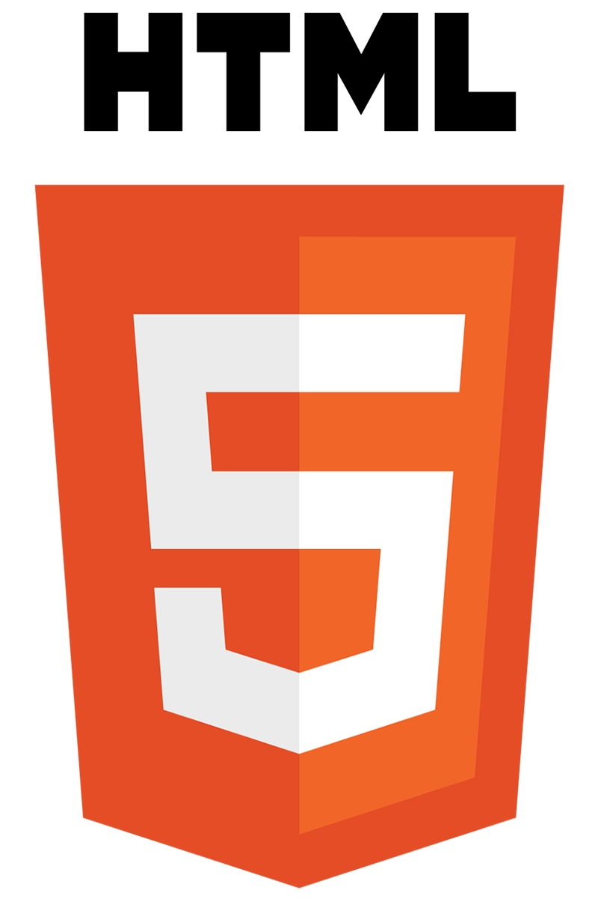
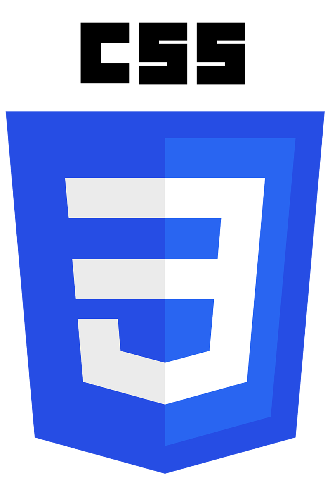
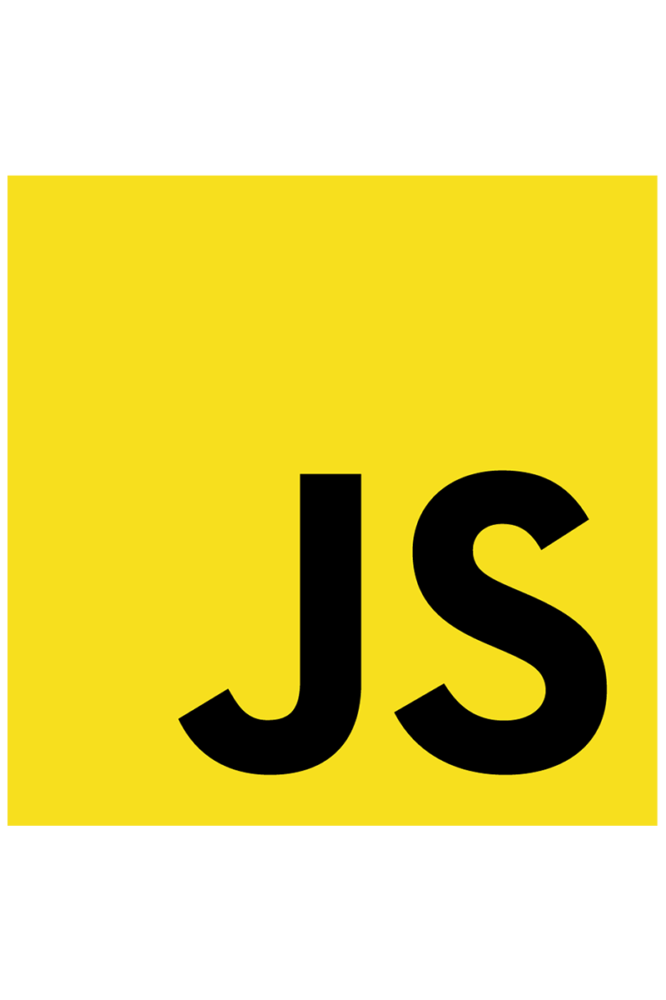
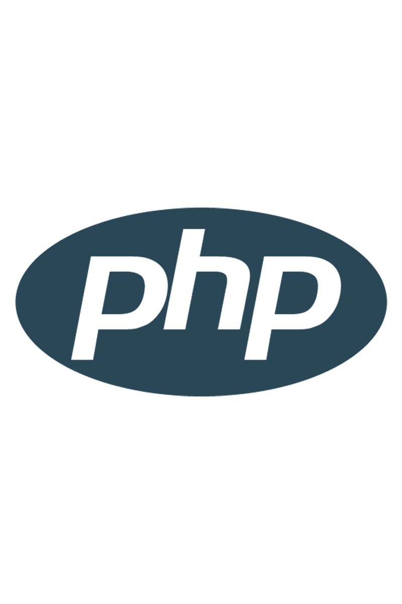
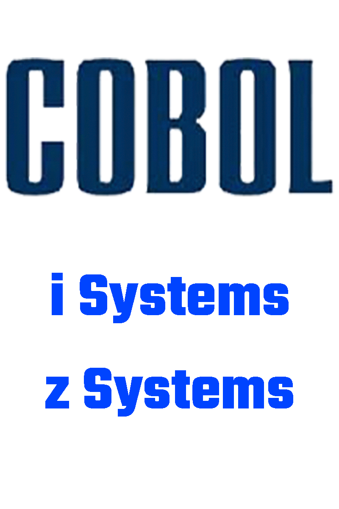
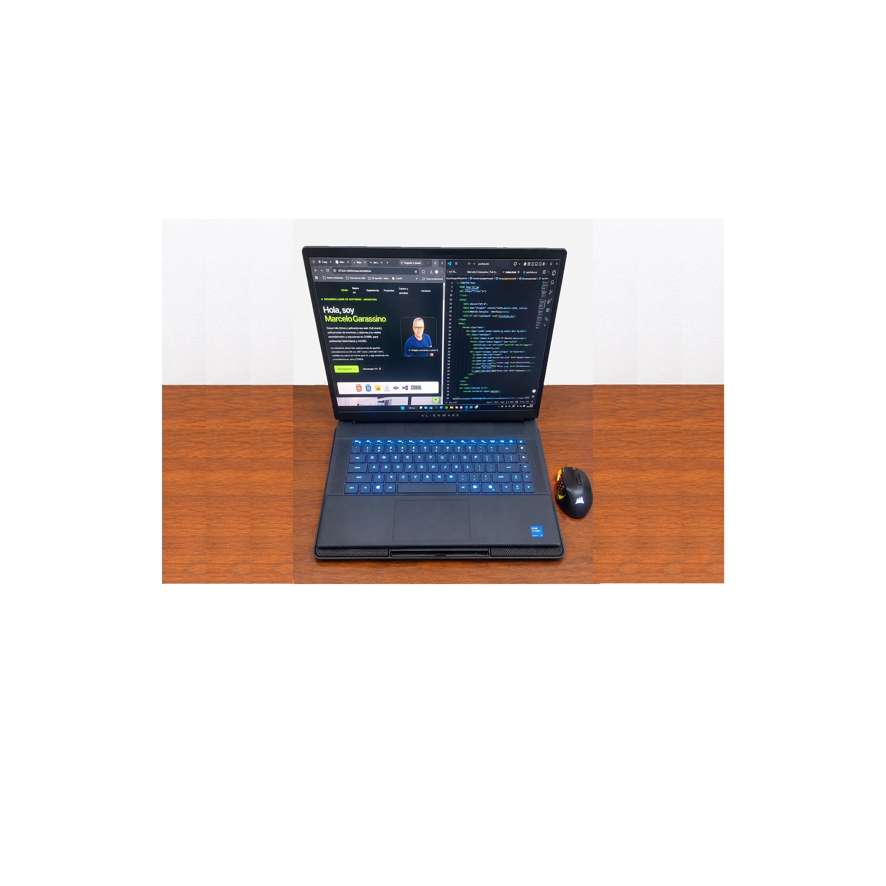
En 1984 mi padre trajo de un viaje el primer ordenador que tuvo mi familia, un Timex Sinclair 2068. Este despertó mi interés, y ese mismo verano me anotó en un curso de basic que se dictaba en ordenadores Texas Instruments TI99-4/A. Desde ese momento me sumergí en la programación. Otros equipos fueron llegando a mis manos con los años, siempre estudiando los lenguajes de cada uno e investigando qué posibilidades ofrecían. Commodore 64, Commodore Amiga 500, hasta que finalmente ya entrados los 90's tuve mi primer PC. En un viaje a los Estados Unidos, consigo el Visual Basic 3.0 Professional Edition, y ahí cambio todo. Interface gráfica, programación modular, OOP, Bases de Datos... Un mundo nuevo. Y llega el internet a mi vida en el año 1997 y todo el nuevo mundo de programación de páginas de internet...
Con los años, esa evolución tecnológica también me llevó a desarrollar mis propios proyectos. Uno de ellos fue un sistema de punto de venta con manejo de impresoras fiscales, desarrollado íntegramente en Visual Basic .NET 2008, al que dediqué varios años de trabajo (2008 - 2015). El proyecto llegó a comercializarse a través de Rodatécnica para el cliente Ticketek, convirtiéndose en una de esas experiencias profesionales que dejan una satisfacción especial: ver cómo algo que comenzó como una idea y muchas horas de programación termina transformándose en una solución utilizada en el ámbito empresarial.
Y de repente me encuentro este año 2023 haciendo un curso de cobol en mainframe, y ¡me fascina!
Comienzo 2024 volviendo a un lenguaje que por diferentes prioridades en varios momentos no pude terminar de estudiar acabadamente. JAVA. En esta oportunidad con Full Stack Java.
Fin del 2024 con una vuelta inesperada del destino, trabajar muy lejos de mi casa. En la ciudad de La Plata. Ingreso a IOMA (Instituto de Obra Médico Asistencial), como desarrollador de aplicaciones de gestión administrativa en .NET (mayormente C# donde no tengo experiencia previa). Un verdadero desafío.
Termino 2025, cumpliendo 1 año en la dirección de sistemas de IOMA. Todos los dias han sido un desafío, aprendiendo, fallando, teniendo éxito y sobre todo, nunca bajando los brazos.
Bases de datos
En el año 2004 entré a trabajar a la empresa AdNetworks, de publicidad enfocada
individualmente en los gustos de cada usuario en particular. Mi puesto consistía en la
generación de informes respecto de los datos de visualización de publicidades de cada
usuario de las computadoras instaladas para uso público en bares, estaciones de servicio,
etc.
Roda técnica. Proyecto Alice
2008 al 2015 programador principal del proyecto Alice. Sistema de punto de venta enfocado en
la facilidad de uso con compatibilidad con impresoras fiscales HASAR y EPSON. En estos
años trabajamos con algunos clientes importantes de la industria textil y TICKETEK (venta
y distribución de entradas a eventos).
Proyecto Nora
Sistema de stock y consulta de costos y precios de venta para comercios pequeños y kioscos.
Basado en lo aprendido con el proyecto Alice, pero para clientes que ya tiene implementado
su sistema de facturación, y solo necesitan un sistema ágil de stock y consulta de precios
de venta.
Desarrollador .NET
IOMA (Instituto de Obra Médico Asistencial)
Desde diciembre/2024 hasta hoy, desarrollo de
aplicaciones para la gestión administrativa.
Proyecto Nora
Esta pagina...
JAVA - 10 proyectos en 10 semanas
.NET Apuntes de práctica profesional
(click en el logo de las instituciones para acceder a los certificados)
Framework para automatización de
navegadores y control programático
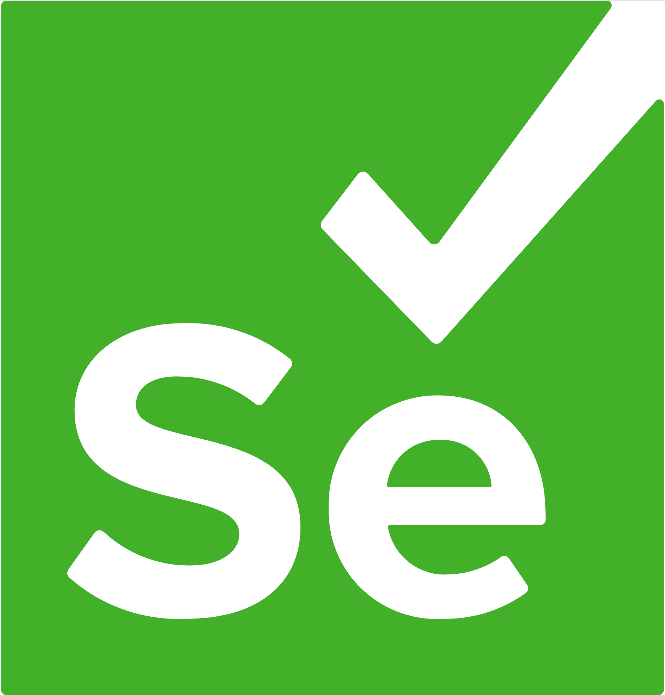
Estudio del lenguaje
por cuenta propia
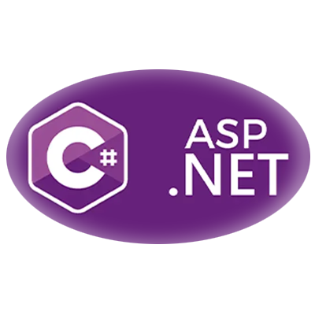
Gobierno de la ciudad
de Buenos Aires
Ministerio de Educación
Full Stack JAVA - Node JS
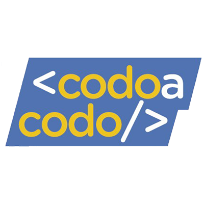
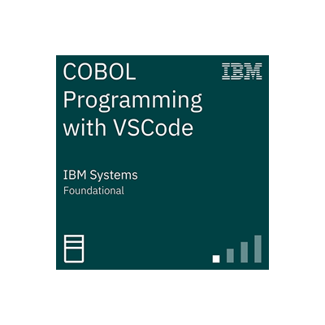
Cobol developer junior
(Cursada finalizada el 31/10/2023)
1era etapa: Programacion COBOL
2da etapa: Tramo Final Integrador
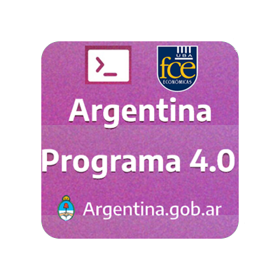
Oracle Next Education
Backend Java y Spring
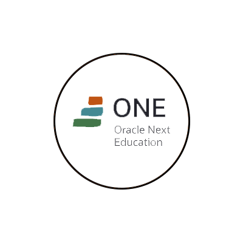